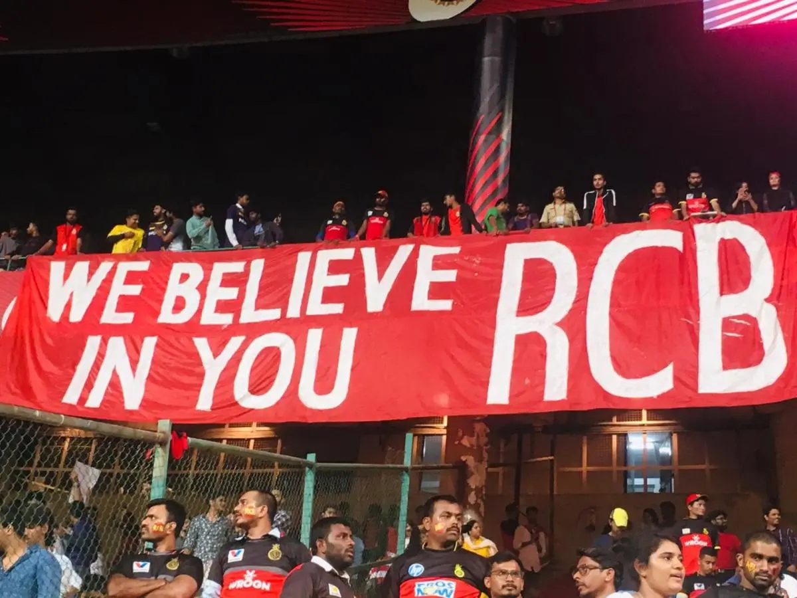
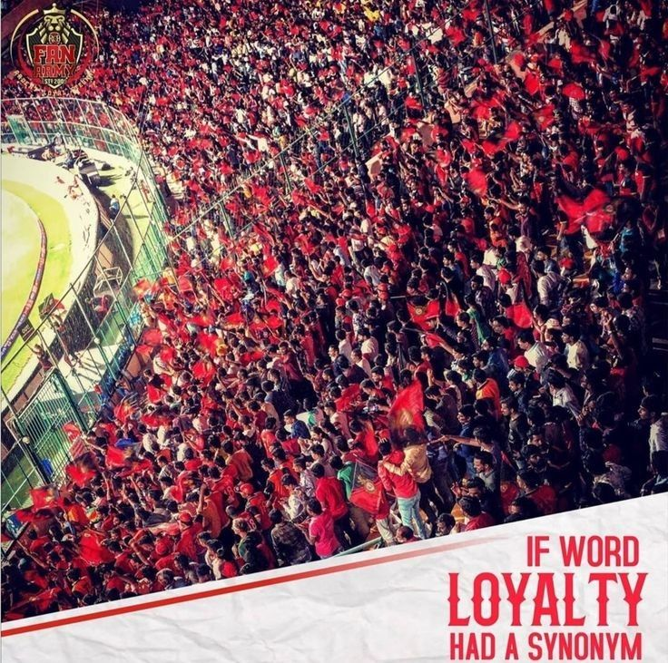
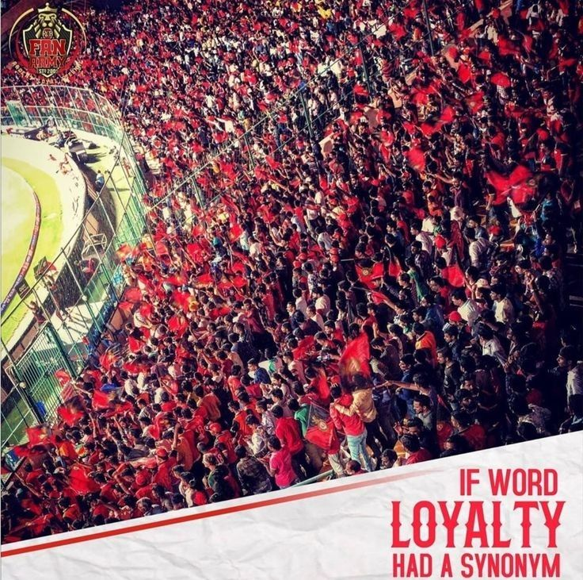
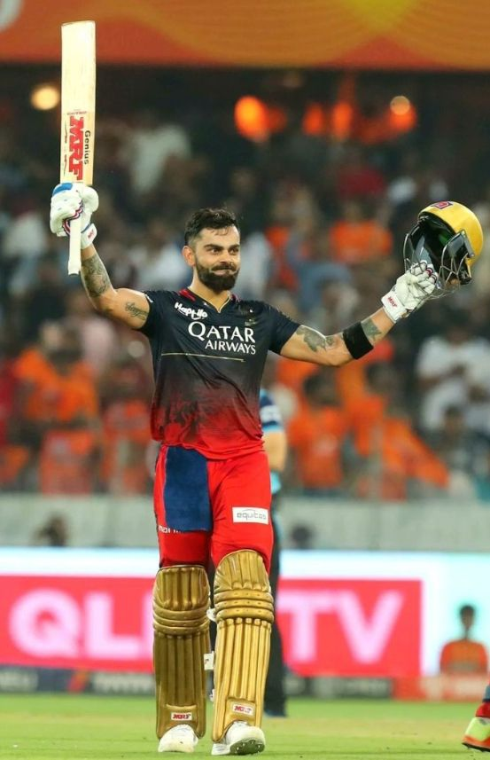
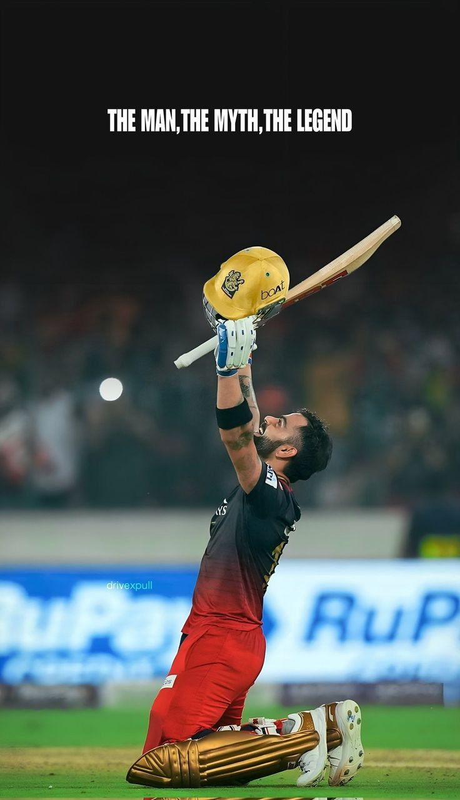
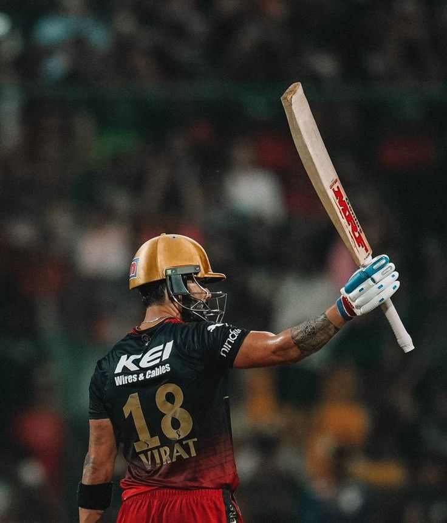
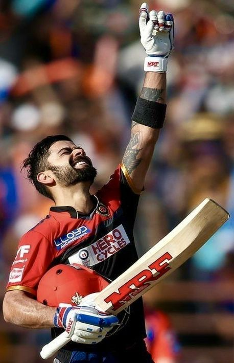

RCB: More Than a Team, It’s an Emotion🏏
Royal Challengers Bangalore isn’t just a cricket team; it’s a part of me, a part of every fan who feels every victory, every defeat, every moment. RCB is an emotion.
The Love for RCB: Beyond the Stats
RCB has given us fans everything from unforgettable matches to some of the best cricketing moments. But it’s not just about the match wins or loses. It’s about the unshakeable belief that this team is a part of our lives. Whether it’s Virat Kohli captaining the team, AB de Villiers’ magic with the bat, or the loyal fans filling the stands at M Chinnaswamy Stadium, there’s a vibe, a spirit, a feeling that can’t be captured in mere stats.
A Home of Passion: The RCB Fans
 

Every RCB fan can relate to the electric atmosphere of the stadium during an RCB match. Whether they’re sitting in the stands, or cheering from their homes, we all share the same pulse. The moment the first ball is bowled, it’s like the whole world fades away, and all that matters is RCB’s success. Each win feels like a personal achievement, and every loss feels like a setback for us as much as it is for the players. The loyalty we have towards this team is built on more than performance it’s about the heart. Even in tough seasons when the team hasn’t lifted the trophy, we stand with them. This bond with RCB fans transcends the cricket field it’s a community that feels like family.
Virat Kohli: The Heartbeat of RCB
Of course, a big part of that connection is Virat Kohli, who has been at the helm of this emotional journey. Kohli is not just a player; he’s a symbol of RCB’s fighting spirit. His passion for the game, his commitment to giving his all every match, his leadership it all resonates with us. As fans, we’ve followed his journey, his highs, and his lows, and it’s like his success and struggles mirror our own hopes for RCB.
The Rollercoaster of Emotions

Supporting RCB is not just fandom ; it's about living every ball, every over, and every match with your heart pounding. One day, you're on top of the world, celebrating an AB de Villiers masterclass or a Kohli century. The next, you're gripping your seat as the game slips through the cracks. It’s heartbreak, it’s hope, it’s fire — it’s family. Supporting RCB is not for the faint-hearted. It’s a journey of passion, loyalty, and belief that one day, the trophy will be ours. Until then, we bleed red and gold — fiercely and fearlessly.
Being an RCB fan isn’t always easy. There’s the heartbreak of losing finals, the excitement of near-perfect seasons, and the occasional thrill of watching an underdog rise. But that’s the essence of being a fan you live through the ups and downs, and you never give up on the team you love.
The RCB emotions don’t end with a season. They stay with us, long after the last ball is bowled, fueling our anticipation for the next season. Every IPL cycle, we return with the same hope, the same belief, that this could be our year.
RCB: More Than a Team
RCB isn’t just about cricket. It’s about hope, passion, loyalty, and unity. It’s a reminder that, no matter what, we always rise again. And the beautiful part? We’re not just cheering for a team; we’re cheering for the emotion that RCB brings the emotion of never giving up, the emotion of believing in the impossible.
Because when you are RCB, you know that every fan’s heart beats together. And that’s what makes RCB more than a team it’s an emotion.
RCB is not just a cricket franchise. It represents passion, unity, heartbreak, comeback, hope, and most of all emotion. From Kohli’s iconic celebrations to the crowd’s roars at Chinnaswamy, every moment is a memory etched into our hearts.
Final Thoughts
RCB is not defined by trophies it’s defined by the love and loyalty of its people. And that’s what makes it powerful. Because in the end, cricket may be a game, but RCB is an emotion that lives in millions of hearts. No matter what happens — Through every high and heartbreak — always RCB.